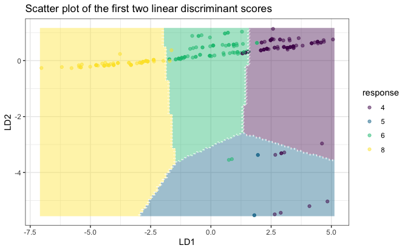
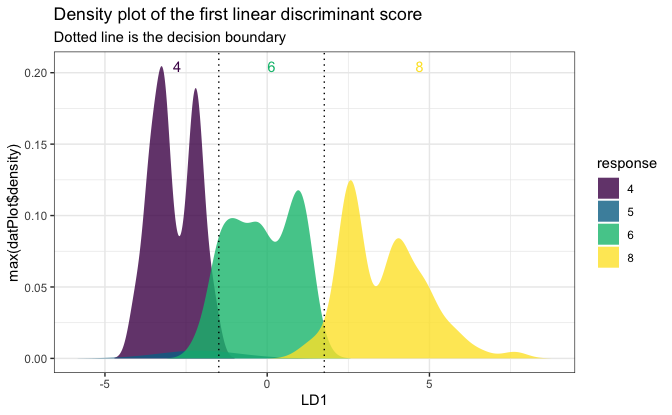

The folda package is an R modeling tool designed for fitting Forward Stepwise Linear Discriminant Analysis (LDA) and Uncorrelated Linear Discriminant Analysis (ULDA). If you’re unfamiliar with stepwise LDA or ULDA, please refer to the following resources:
For stepwise LDA using Wilks’ Lambda, see Section 6.11.1 in Methods of Multivariate Analysis, Third Edition by Alvin C. Rencher and William F. Christensen (2012).
For ULDA, refer to Ye, J., & Yu, B. (2005). Characterization of a family of algorithms for generalized discriminant analysis on undersampled problems. Journal of Machine Learning Research, 6(4). Link.
For a combination of ULDA and forward LDA using Pillai’s trace, see Wang, S. (2024). A New Forward Discriminant Analysis Framework Based on Pillai’s Trace and ULDA. arXiv preprint arXiv:2409.03136. Link.
Installation
install.packages("folda")You can install the development version of folda from GitHub with:
# install.packages("devtools")
devtools::install_github("Moran79/folda")Overview
If you’ve ever been frustrated by the warnings and errors from MASS::lda(), you will appreciate the ULDA implementation in folda(). It offers several key improvements:
No more “constant within group” errors! ULDA can handle constant columns and perfect separation of groups.
Automatic missing value handling! The implementation seamlessly integrates automatic missing value imputation during both training and testing phases.
Fast! ULDA is implemented using the Generalized Singular Value Decomposition (GSVD) method, which diagonalizes both within-class and total scatter matrices simultaneously, offering a speed advantage over the sequential diagonalization used in
MASS::lda()(see Howland et al., 2003 for more details). We have also rewritten the matrix decomposition modules (SVD, QR) usingRcppEigen, further improving computational efficiency by leveraging optimized C++ code.Better visualization!
foldausesggplot2to provide visualizations of class separation in projected 2D spaces (or 1D histograms), offering valuable insights.
For the forward LDA implementation, folda offers the following advantages over the classical framework:
No issues with multicollinearity or perfect linear dependency!
Handles perfect separation and offers greater power! The classical approach using Wilks’ Lambda has known limitations, including premature stopping when some (not all) groups are perfectly separated. Pillai’s trace, as used in
folda(), not only effectively addresses perfect separation, but has also been shown to generally have greater statistical power than Wilks’ Lambda (Rencher et al., 2002).
Basic Usage
library(folda)
mpg <- as.data.frame(ggplot2::mpg) # Prepare the data
datX <- mpg[, -5] # All predictors without Y
response <- mpg[, 5] # we try to predict "cyl" (number of cylinders)Build a ULDA model with all variables:
fit <- folda(datX = datX, response = response, subsetMethod = "all")Build a ULDA model with forward selection via Pillai’s trace:
fit <- folda(datX = datX, response = response, subsetMethod = "forward", testStat = "Pillai")
print(fit) # 6 out of 11 variables are selected, displ is the most important among them
#>
#> Overall Pillai's trace: 1.325
#> Associated p-value: 4.636e-74
#>
#> Prediction Results on Training Data:
#> Refitting Accuracy: 0.9188
#> Gini Index: 0.7004
#>
#> Confusion Matrix:
#> Actual
#> Predicted 4 5 6 8
#> 4 69 0 3 0
#> 5 8 4 2 0
#> 6 4 0 74 2
#> 8 0 0 0 68
#>
#> Group means of LD scores:
#> LD1 LD2 LD3
#> 4 3.05298379 0.02700248 -0.3555829
#> 5 1.87744449 -4.45014946 0.8156167
#> 6 0.06757888 0.28356907 0.5911862
#> 8 -3.71628852 -0.09697943 -0.3023424
#>
#> Forward Selection Results:
#> var statOverall statDiff threshold
#> 1 displ 0.873393 0.87339300 0.06545381
#> 2 modelnew beetle 1.029931 0.15653777 0.05673510
#> 3 modeljetta 1.141651 0.11172064 0.05496185
#> 4 modelcaravan 2wd 1.210165 0.06851331 0.05363507
#> 5 classmidsize 1.263449 0.05328468 0.05276500
#> 6 cty 1.325255 0.06180560 0.05194279Plot the results:
plot(fit, datX = datX, response = response)
One-dimensional plot:
# A 1D plot is created when there is only one feature
# or for binary classification problems.
mpgSmall <- mpg[, c("cyl", "displ")]
fitSmall <- folda(mpgSmall[, -1, drop = FALSE], mpgSmall[, 1])
plot(fitSmall, mpgSmall, mpgSmall[, 1])
Make predictions:
head(predict(fit, datX, type = "response"))
#> [1] "4" "4" "4" "4" "6" "4"
head(predict(fit, datX, type = "prob")) # Posterior probabilities
#> 4 5 6 8
#> 1 0.9966769 7.475058e-08 0.0033230408 7.023764e-12
#> 2 0.9994438 1.401133e-08 0.0005562131 5.338710e-13
#> 3 0.9970911 3.835722e-08 0.0029088506 1.738154e-11
#> 4 0.9983963 2.196016e-08 0.0016037009 7.365641e-12
#> 5 0.3122116 6.809673e-07 0.6877815595 6.173116e-06
#> 6 0.5995781 4.275271e-07 0.4004193019 2.123291e-06More examples can be found in the vignette.
References
Howland, P., Jeon, M., & Park, H. (2003). Structure preserving dimension reduction for clustered text data based on the generalized singular value decomposition. SIAM Journal on Matrix Analysis and Applications, 25(1), 165-179.
Rencher, A. C., & Christensen, W. F. (2002). Methods of Multivariate Analysis (Vol. 727). John Wiley & Sons.
Wang, S. (2024). A new forward discriminant analysis framework based on Pillai’s trace and ULDA. arXiv preprint, arXiv:2409.03136. Retrieved from https://arxiv.org/abs/2409.03136.
Getting help
If you encounter a clear bug, please file an issue with a minimal reproducible example on GitHub